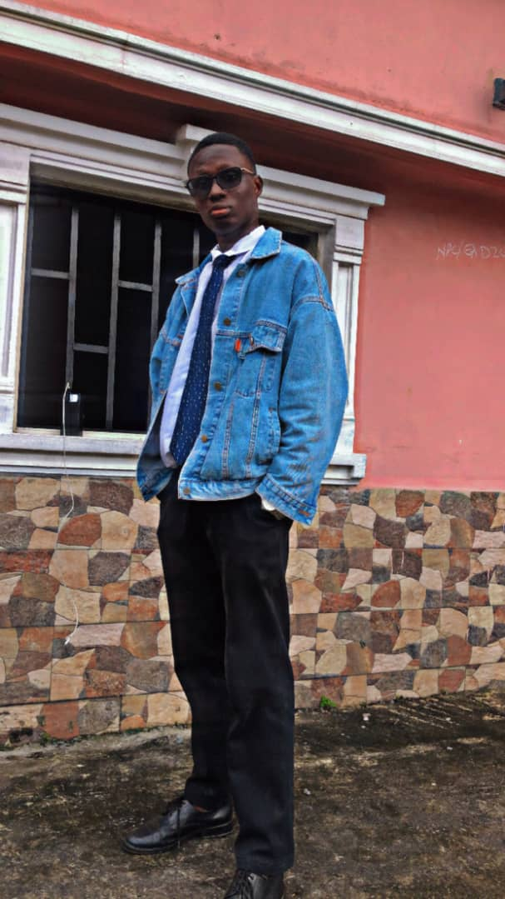

Elvis Ebi-Johnson Ayebataribaralatei | WDD 130
Hello. My name is Ebi-Johnson Elvis Ayebatari baralatei. I prefer to be called Elvis. I am 22 years old. I'm from a wonderful Island called Brass deep in Bayelsa State, Nigeria. I live with my parents in Yenagoa, the capital of Bayelsa State. I have 5 siblings.
I am currently studying Mechatronics Engineering at Achievers University, Owo Ondo State. After I graduate, I am hoping to serve a full-time mission.
I am very happy to be here to be learning this course. I look forward to the experience and knowledge. I also look forward to getting to know my Instructor and course mates as well.
Thank you for visiting my first site :)